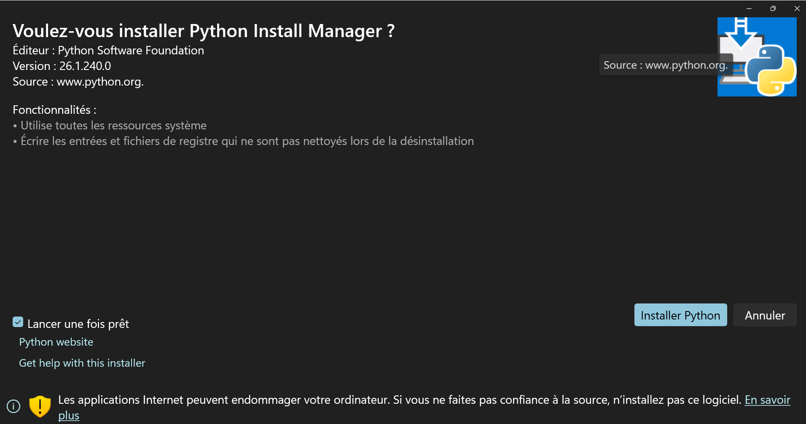
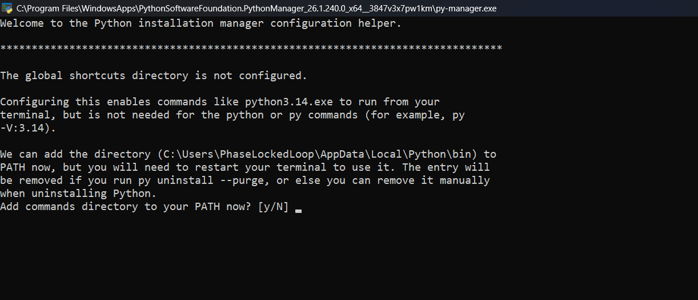

Vittascience – Créer des variables, manipuler les types et programmer des systèmes
Chaque capture d’écran fait l’objet d’un questionnaire. Avant de répondre, l’élève doit expérimenter le programme correspondant dans l’interface Vittascience.
Ressource vidéo interactive
🎯 Regarde la vidéo puis reproduis les étapes dans Vittascience.
Cette ressource sert de rappel de cours avant les exercices. La vidéo est masquée par défaut pour éviter de distraire les élèves.
🎥 Voir la vidéo explicative
Mini-quiz après la vidéo
Réponds après avoir regardé la vidéo. Ce mini-quiz n’est pas noté dans le barème principal.
Règle importante concernant les aides et corrections
Chaque question dispose d’un bouton 💡 Aide et d’un bouton ✅ Correction. L’aide sert à orienter l’élève sans donner directement la réponse.
Rappel rapide avant les exercices
- x = 14 signifie que la variable x contient maintenant 14.
- print(x) affiche la valeur de x.
- print("x") affiche le texte x, parce que les guillemets indiquent du texte.
Interface utilisée pour les exercices principaux
Ouvrir l’interface Vittascience Python – mode mixte
Les liens Vittascience ouvrent une interface Python en mode mixte, sans projet local préchargé. Pour chaque exercice, reproduis le programme à partir de la capture ou du code transcrit, puis teste-le. La partie « Installer Python et les outils nécessaires » sert surtout aux prolongements non notés.
Réglages avant de commencer
Choisis les paramètres de travail avant de lancer le questionnaire. Le chronomètre est indicatif : il ne bloque pas le travail.
Ce choix est libre et confidentiel. Les élèves bénéficiant d’un aménagement disposent du temps adapté à leur situation.
Mode enseignant
Ce panneau permet d’afficher quelques informations utiles sans modifier les exercices.
Pour ouvrir ce mode, saisir le code simple demandé. Vous pouvez le modifier dans le code HTML si besoin.
Mini-cours : variables, entiers, flottants et chaînes
Une variable mémorise une information. En Python, elle peut contenir plusieurs types de données.
| Type | Exemple | Rôle |
|---|---|---|
| int | age = 14 | Nombre entier : quantité, compteur, nombre d’objets. |
| float | distance = 12.5 | Nombre décimal : température, longueur, prix, vitesse. |
| str | nom = "Luna" | Texte : nom, message, étiquette, phrase. |
Installer Python et les outils nécessaires
Méthode classique
1. Installer Python





Télécharge Python depuis le site officiel : Télécharger Python
Pendant l’installation sur Windows, pense à cocher l’option : Add Python to PATH.
2. Installer PyCharm (facultatif mais conseillé)
Télécharge PyCharm Community depuis le site officiel : Télécharger PyCharm
Si l’installation de PyCharm est impossible — manque d’espace disque, réseau qui bloque certains téléchargements, ou travail sur tablette — il est possible d’utiliser une plateforme Python en ligne.
WebPython est utilisée dans des contextes scolaires, notamment au lycée. Elle permet de tester rapidement du code Python depuis un navigateur, sans aucune installation. C’est une solution pratique lorsqu’on ne peut pas installer de logiciel sur l’ordinateur. En revanche, elle ne permet pas toujours d’importer des modules externes.
Pour les projets nécessitant des bibliothèques comme pygame, matplotlib, turtle ou d’autres modules, il faut privilégier PyCharm avec Python installé localement, ou utiliser une plateforme en ligne plus complète comme Online Python lorsque les modules nécessaires y sont disponibles.
3. Installer une bibliothèque si elle manque
Sous Windows : fais un clic droit sur PowerShell, puis choisis Exécuter en tant qu’administrateur.
Dans PowerShell (de préférence en administrateur si nécessaire) :
# Vérifie que Python est disponible.
python --version
# Installe matplotlib.
python -m pip install matplotlib
# turtle est généralement inclus avec Python.
# Si besoin, on peut essayer :
python -m pip install PythonTurtle
Dans PyCharm : ouvrir le projet, puis aller dans View → Tool Windows → Python Packages, chercher la bibliothèque et cliquer sur Install.
Aide officielle pour installer des packages dans PyCharm
Méthode moderne : Python Install Manager (recommandée)
Avant les prolongements, les élèves doivent d’abord travailler sur le site Vittascience, dans la section Programmer > Python, en mode mixte : blocs + Python.
Ouvrir Vittascience – Programmer en Python Télécharger Python Télécharger PyCharm Community
1. Installer Python avec Python Install Manager
Python Install Manager est une méthode proposée par python.org. Il installe d’abord un gestionnaire, puis il peut proposer d’installer le vrai moteur Python, appelé CPython. C’est normal.
2. Ouvrir PowerShell ou Terminal en administrateur
Pour ouvrir rapidement PowerShell ou Terminal en administrateur, appuyer sur Win + X, puis choisir Terminal (Admin) ou Windows PowerShell (Admin).
3. Vérifier que Python fonctionne
Après l’installation, ouvrir une nouvelle fenêtre PowerShell, puis tester les commandes suivantes.
# Vérifie que Python est disponible.
python --version
# Autre commande possible sous Windows.
py --version
# Vérifie que pip fonctionne.
python -m pip --version
# Met pip à jour si nécessaire.
python -m pip install --upgrade pip4. Installer une bibliothèque Python avec PowerShell
Une bibliothèque ajoute des possibilités à Python. Par exemple, matplotlib permet de tracer des graphiques.
# Installe matplotlib pour tracer des graphiques.
python -m pip install matplotlib
# Si la commande python ne fonctionne pas, essayer avec py.
py -m pip install matplotlib5. Installer une bibliothèque dans PyCharm
Dans PyCharm, on peut aussi installer une bibliothèque directement depuis les paramètres. Le raccourci utile est Ctrl + Alt + S.
- Ouvrir PyCharm.
- Appuyer sur Ctrl + Alt + S.
- Aller dans Project, puis Python Interpreter.
- Cliquer sur + ou Install selon la version.
- Rechercher la bibliothèque, par exemple matplotlib.
- Cliquer sur Install Package.
10 exercices supplémentaires non notés – Pour aller plus loin
Ces exercices sont progressifs. Les élèves entrent eux-mêmes les valeurs pour créer leurs variables.
Bonus 1 – Présentation avec une chaîne
# On demande le prénom de l'élève.
prenom = input("Entre ton prénom : ")
# On affiche une phrase personnalisée.
print("Bonjour", prenom)Bonus 2 – Addition de deux entiers
# On demande un premier entier.
a = int(input("Entre un premier entier : "))
# On demande un deuxième entier.
b = int(input("Entre un deuxième entier : "))
# On calcule la somme.
somme = a + b
# On affiche le résultat.
print("La somme est :", somme)Bonus 3 – Prix total avec un nombre décimal
# On demande le prix d'un objet.
prix = float(input("Prix d'un objet en euros : "))
# On demande la quantité.
quantite = int(input("Quantité achetée : "))
# On calcule le total.
total = prix * quantite
# On affiche le total.
print("Le prix total est :", total, "euros")Bonus 4 – Kilomètres vers miles
# On demande une distance en kilomètres.
kilometres = float(input("Distance en kilomètres : "))
# On définit le facteur de conversion.
facteur = 0.621371
# On convertit en miles.
miles = kilometres * facteur
# On affiche le résultat.
print(kilometres, "km =", miles, "miles")Bonus 5 – Celsius vers Fahrenheit
# On demande une température en degrés Celsius.
celsius = float(input("Température en °C : "))
# On convertit en degrés Fahrenheit.
fahrenheit = celsius * 9 / 5 + 32
# On affiche le résultat.
print(celsius, "°C =", fahrenheit, "°F")Bonus 6 – Aire d’un triangle
# On demande la base du triangle.
base = float(input("Longueur de la base : "))
# On demande la hauteur du triangle.
hauteur = float(input("Hauteur du triangle : "))
# On calcule l'aire.
aire = base * hauteur / 2
# On affiche le résultat.
print("L'aire du triangle est :", aire)Bonus 7 – Répéter un message
# On demande un mot.
mot = input("Entre un mot : ")
# On demande un nombre de répétitions.
nombre = int(input("Combien de fois faut-il l'afficher ? "))
# On répète le mot.
print(mot * nombre)Bonus 8 – PyCharm : carré avec turtle
# On importe la bibliothèque turtle.
import turtle
# On crée une tortue.
stylo = turtle.Turtle()
# On demande la longueur du côté.
cote = int(input("Longueur du côté du carré : "))
# On trace un carré.
for i in range(4):
# La tortue avance.
stylo.forward(cote)
# La tortue tourne à droite.
stylo.right(90)
# On garde la fenêtre ouverte.
turtle.done()Bonus 9 – PyCharm : triangle coloré
# On importe la bibliothèque turtle.
import turtle
# On crée une tortue.
stylo = turtle.Turtle()
# On choisit une couleur.
stylo.color("blue")
# On demande la longueur du côté.
cote = int(input("Longueur du côté du triangle : "))
# On trace un triangle équilatéral.
for i in range(3):
# La tortue avance.
stylo.forward(cote)
# La tortue tourne de 120 degrés.
stylo.left(120)
# On garde la fenêtre ouverte.
turtle.done()Bonus 10 – PyCharm : spirale simple
# On importe la bibliothèque turtle.
import turtle
# On crée une tortue.
stylo = turtle.Turtle()
# On demande le nombre de segments.
segments = int(input("Nombre de segments : "))
# On trace une spirale.
for i in range(segments):
# La distance augmente progressivement.
stylo.forward(i * 5)
# La tortue tourne à droite.
stylo.right(90)
# On garde la fenêtre ouverte.
turtle.done()Résultat final
Calcul sur 62 points, puis conversion automatique sur 20.